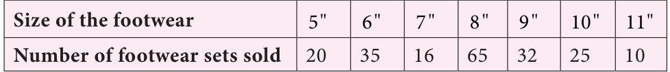
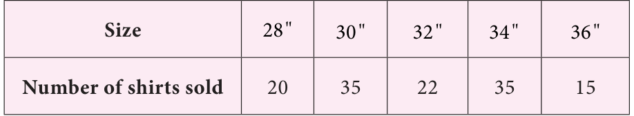
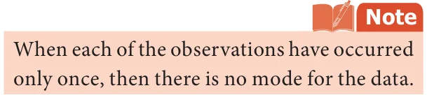
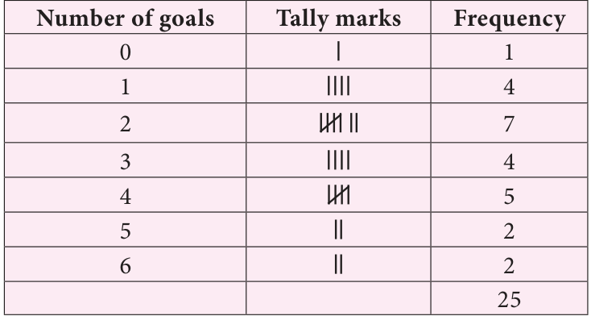
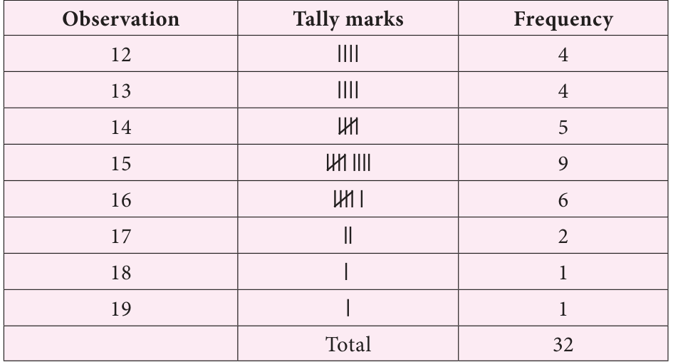
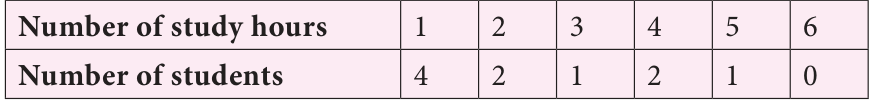
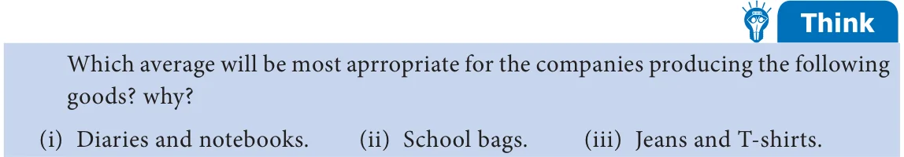

<!DOCTYPE html>
<html lang="en">
<head>
<meta charset="UTF-8">
<meta name="viewport" content="width=device-width,initial-scale=1">
<title>5.6 Mode — Statistics</title>
<meta name="description" content="Class 7 Mathematics · Term 3 · Statistics · 5.6 Mode">
<link rel="icon" href="data:image/svg+xml,<svg xmlns='http://www.w3.org/2000/svg' viewBox='0 0 100 100'><text y='.9em' font-size='90'>📘</text></svg>">
<link rel="stylesheet" href="../../../assets/book.css">
<link rel="stylesheet" href="https://cdn.jsdelivr.net/npm/katex@0.16.11/dist/katex.min.css" crossorigin="anonymous">
</head>
<body>
<header class="topbar">
<div class="topbar-in">
  <div class="crumb">
    <span class="c1"><a href="../../../index.html">Library</a> · <a href="../../index.html">Class 7 Mathematics · Term 3</a></span>
    <span class="c2">Statistics · 5.6 Mode</span>
  </div>
  <a class="tb-btn" data-nav="prev" href="../../05-statistics/06-exercise-5.1/index.html" title="Exercise 5.1">←</a>
  <details class="drawer"><summary class="tb-btn" title="Sections in this chapter">☰</summary>
<div class="drawer-panel"><div class="dh">Statistics</div><a href="../01-introduction-5.1/index.html">5.1 Introduction</a><a href="../02-collection-of-data-5.2/index.html">5.2 Collection of data</a><a href="../03-organisation-of-data-5.3/index.html">5.3 Organisation of Data</a><a href="../04-representative-values-5.4/index.html">5.4 Representative values</a><a href="../05-arithmetic-mean-5.5/index.html">5.5 Arithmetic Mean</a><a href="../06-exercise-5.1/index.html">Exercise 5.1</a><a href="../07-mode-5.6/index.html" aria-current="page">5.6 Mode</a><a href="../08-exercise-5.2/index.html">Exercise 5.2</a><a href="../09-median-5.7/index.html">5.7 Median</a><a href="../10-exercise-5.3/index.html">Exercise 5.3</a><a href="../11-exercise-5.4/index.html">Exercise 5.4</a><a href="../12-summary/index.html">Summary</a><a href="../13-ict-corner/index.html">ICT Corner</a></div></details>
  <a class="tb-btn" data-nav="next" href="../../05-statistics/08-exercise-5.2/index.html" title="Exercise 5.2">→</a>
  <button class="tb-btn" data-theme-toggle title="Toggle light / dark" aria-label="Toggle light or dark theme">◐</button>
</div>
<div class="progress"><span style="width:83.1%"></span></div>
</header>
<main class="wrap">
<div class="sec-head">
  <p class="eyebrow"><a href="../index.html">Chapter 5 · Statistics</a></p>
  <h1>5.6 Mode</h1>
  <p class="sec-meta">Textbook pages 7–10 · 8 figures</p>
</div>
<article class="prose">
<p>As we have discussed earlier that the arithmetic mean is one of the form of representative value or measures of central tendency of a group of data. Depending upon the data and its purpose, other measures of central tendency may be used. Consider the example of sale details of different sizes of footwear in a shop for a week.</p>
<figure class="fig wide"></figure>
<p>The shopkeeper has to replenish his stock at the end of the week. Suppose we find the arithmetic mean of the footwear sold,</p>
<div class="mathblock"><p>Mean= \(20+ 35+ 16+ 65+ 32+ 25+ 10 = 203 = 29\).</p></div>
<p>7 7 Average number of footwear is 29. This means that the shopkeeper has to get 29 pairs of footwear in each size. Will it be wise to decide like this?</p>
<p>So the shopkeeper has to get more number of footwear of size 8 inches. Hence arithmetic mean does not suit for this purpose. Here we need another type of representative value of data called ‘Mode’.</p>
<p>Mode is the value of the data which occurs maximum number of times.</p>
<figure class="fig side-fig"></figure>
<p>Consider another example. A shopkeeper analyses his sales data of readymade shirts to plan for the stock according to the demand. The sale details of shirts are given below.</p>
<figure class="fig table-fig wide"></figure>
<p>Here he observes that there is a Try these equal demand for shirts of sizes 30" (1) Find the mode of the following data. and 34" . Now this data has two modes 2, 6, 5, 3, 0, 3, 4, 3, 2, 4, 5, 2 as there are two maximum occurrences namely 30" and 34" . He stocks more (2) Find the mode of the following data set. shirts of these 2 sizes. Note that, this 3, 12, 15, 3, 4, 12, 11, 3, 12, 9, 19 data has two mode and it is known as (3) Find the mode of even numbers within 20. bimodal data.</p>
<p>Example 5.5 Find the mode of the given set of numbers. 5, 7, 10, 12, 4, 5, 3, 10, 3, 4, 5, 7, 9, 10, 5, 12, 16, 20, 5</p>
<h4 class="callout-h" id="s-solution">Solution</h4>
<p>Arranging the numbers in ascending order without leaving any value, we get, 3, 3, 4, 4, 5, 5, 5, 5, 5, 7, 7, 9, 10, 10, 10, 12, 12, 16, 20 Mode of this data is 5, because it occurs more number of times than the other values.</p>
<h4 class="callout-h" id="s-note">Note</h4>
<p>To find mode, arranging the raw data in ascending order is not mandatory. It helps us to ensure that each and every value is taken into account for the calculation of mode and helps in identifying the mode value easily.</p>
<p>19, 23, 23, 26, 34, 23. Find the mode of the marks.</p>
<p class="lead">Solutionv</p>
<p>Arranging the given marks in ascending order, we get, 2, 15, 19, 21, 23, 23, 23, 23, 26, 34, 38. Example 5.7 Clearly, 23 occurs maximum number of times. Hence mode of marksFind the mode of the following data 123, 132, 145, 176, 180, 120=23.</p>
<h4 class="callout-h" id="s-solution">Solution</h4>
<figure class="fig"></figure>
<p>From the above data, we can see that there is no repetition of values in the given data. Each observation occurs only once, so there is no mode.</p>
<h3 class="callout-h" id="s-think">Think</h3>
<ul class="qlist">
<li><span class="mk">1.</span><span class="lt">A toy factory making variety of toys for kids, wants to know the most popular toy</span></li>
</ul>
<p>liked by all the kids. Which average will be the most appropriate for it?</p>
<ul class="qlist">
<li><span class="mk">2.</span><span class="lt">Is there a mode exists between the odd numbers from 20 to 40? Discuss.</span></li>
</ul>
<h3 id="s-5-6-1-mode-of-large-data">5.6.1 Mode of large data</h3>
<p>When size of the data is large, it is not easy to identify the value which occurs maximum number of times. In that case, we can group the data by using tally marks and then find the mode.</p>
<p>Consider the example to find the mode of the number of goals scored by a football team in 25 matches. The goal scored are 1, 3, 2, 5, 4, 6, 2, 2, 2, 4, 6, 4, 3, 2, 1, 1, 4, 5, 3, 2, 2, 4, 3, 0, 1.</p>
<p>To find the mode of this data, the number of goals score starting from 0 and ending with a maximum of 6 is represented in the form of a table.</p>
<figure class="fig table-fig"></figure>
<p>number of goals, that is 2. Hence, the mode is 2.</p>
<p>Example 5.8 Find the mode of the following data. 14, 15, 12, 14, 16, 15, 17, 13, 16, 16, 15, 12, 16, 15, 13, 14, 15, 13, 15, 17, 15, 14, 18, 19, 12, 14, 15, 16, 15, 16, 13, 12.</p>
<h4 class="callout-h" id="s-solution">Solution</h4>
<p>We tabulate the data as follows. The whole data ranges from 12 to 19.</p>
<figure class="fig table-fig wide"></figure>
<p>The highest frequency is 9 which corresponds to the value 15. Hence the mode of this data is 15.</p>
<p>Example 5.9 The following data shows that the number of hours spent by the students for study.</p>
<figure class="fig wide"></figure>
<p>Find the mode.</p>
<h4 class="callout-h" id="s-solution">Solution</h4>
<p>Since the one hour study time is spent by maximum number of students, the mode of the data is 1 hour.</p>
<figure class="fig wide"></figure>
</article>
<nav class="pager"><a class="" data-nav="prev" href="../../05-statistics/06-exercise-5.1/index.html"><span class="dir">← Previous</span><span class="t">Exercise 5.1</span><span class="ch">Statistics</span></a><a class="nx" data-nav="next" href="../../05-statistics/08-exercise-5.2/index.html"><span class="dir">Next →</span><span class="t">Exercise 5.2</span><span class="ch">Statistics</span></a></nav>
</main><footer class="site">Generated from the source textbook PDFs · text, figures and exercises belong to their respective publishers.</footer><script defer src="https://cdn.jsdelivr.net/npm/katex@0.16.11/dist/katex.min.js" crossorigin="anonymous"></script>
<script defer src="https://cdn.jsdelivr.net/npm/katex@0.16.11/dist/contrib/auto-render.min.js" crossorigin="anonymous"
  onload="renderMathInElement(document.body,{delimiters:[
    {left:'\\(',right:'\\)',display:false},
    {left:'$$',right:'$$',display:true},
    {left:'\\[',right:'\\]',display:true}],throwOnError:false,ignoredTags:['script','noscript','style','textarea','pre','code']})"></script>
<script src="../../../assets/book.js"></script>
<script defer src="../../../../assets/search.js?v=1789782769"></script>
<script defer src="../../../../assets/screenshot.js?v=1789782769"></script>
</body>
</html>
